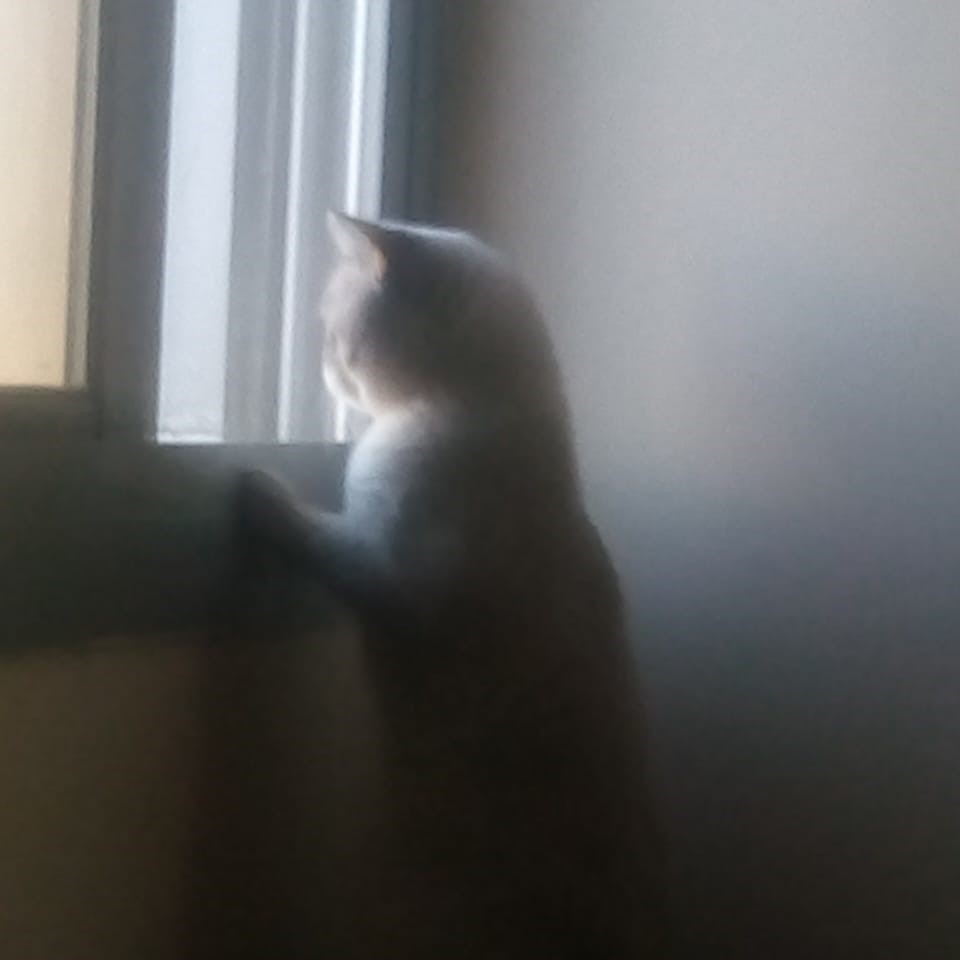

Mohammed Baraa Adnan
AUS E-mail: b00089025@aus.edu
Discord:
Introduction
Year at AUS: Fifth
Major/Minor: Computer Engineering & Mathematics Double Major
I remember my exploratory behavior towards phones and devices at home since childhood. My interest later settled with video games and made me the tech guy of the house. As Computer Engineers, we gain a wide skill set that allows us into different fields beyond AI. Pursuing math is fun; I hope to find applications for some of the emerging pure math in engineering.
What I Hope to Learn in this Course
-
Web Dev
-
Manging Projects
-
Software Dev Cycle
-
Working with Cloud
Hobbies
These days I play Oud or do calisthenics in my free time. I also play video games occasionally.
Fun Fact
I have a car, and his name is Joe. Here's a picture:
Ahmad Tarek
AUS E-mail: b00091962@aus.edu
Discord:
Introduction
Year at University: Senior
Major/Minor: Computer Science
Reasons for pursuing this degree: LOL, I have a long story to say.
Alright, my journey to studying Computer Science is the definition of chaos. Think plot twists, emotional breakdowns, and a little bit of double-agent action.
So, it all started with me being Dr. Ahmed. My family had already decided I’d be a doctor. “Dr. Ahmed, the pride of the family!” They didn’t just give me the title, they gave me the whole identity. I hadn’t even started med school yet, and I was already their golden child. But here’s where things get interesting.
What I Hope to Learn in this Course
-
Team Work
-
Project Management
-
Cloud Hosting
Hobbies
I’m someone who thrives on both mental and physical challenges. My journey started on the football field, where I played at a competitive level for both a club and my university team—until injuries and a busy schedule led me to explore new passions. Now, I channel that same competitive spirit into Jiu-Jitsu, gym workouts, and table tennis, always striving to push my limits.
Beyond sports, I’m deeply immersed in technology and coding, constantly building and learning—whether it’s web development, cybersecurity, or machine learning. But my creativity doesn’t stop there. I have a passion for photography, videography, and video editing, capturing stories through visuals, whether it’s travel moments or meaningful content. At the same time, I find inspiration in books, Arabic poetry, and storytelling, appreciating the power of words and artistic expression. Whether I’m competing, creating, or coding, I’m always on a journey of growth, pushing myself to explore new horizons
Fun Fact
I like animals alot, here is a pic of my Friend Croco

Maaz Ahmad
AUS E-mail: b00091247@aus.edu
Discord: I don't have a Discord
Introduction
Year at University: Senior 2
Major/Minor: Computer Engineering, minoring in Data Science
I am essentially a thinker and a problem solver at my core. I like to challenge normal ways of doing things and try to find newer cooler and most importantly, the easiest way. This brought me to engineering where I am constantly challenged to solve problems and I find myself challenging the professor's way of doing things. As for why I chose computer engineering specifically, I will be honest, I just wanted to jump on the bandawagon hahah.
What I Hope to Learn in this Course
-
Software development practices
-
Web Design Frontend and Backend
-
Learn how to work on an Agile Software team
Hobbies
Although thorughout my childhood I was an indoors and digital kid and enjoyed watching youtube and playing videogames. However, now that I have the freedom, I enjoy all outdoor actvities including desert adventures, mountain hiking, swimming at the beach, and long drives. I also spend a lot of time in the gym and I love playing football, but I am on a break now due to a knee injury:(
Here is a picture of my recent hike:
Fun Fact
I broke my left arm when I was 7 and it didnt heal straight, so I have one bent arm.